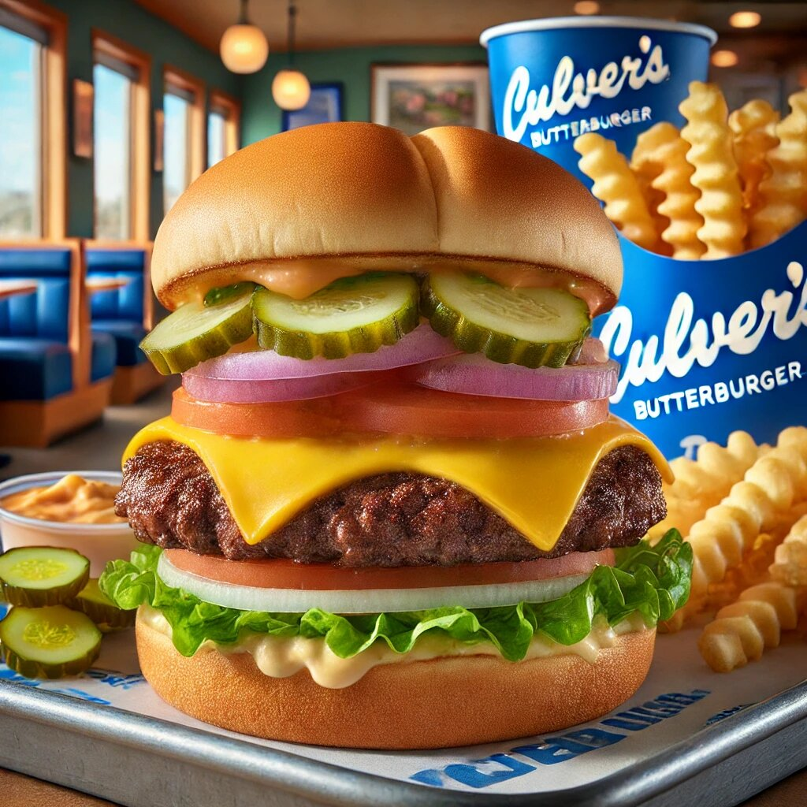

When it comes to burgers, few names evoke as much excitement and satisfaction as Culver’s ButterBurger. Whether you’re a longtime fan or a first-time visitor, Culver’s has a way of making every bite feel like a celebration. From its perfectly toasted bun to its juicy, flavorful patty, the ButterBurger is a masterpiece of fast-casual dining. In this article, we’ll explore everything you need to know about culver’s butter burger, including menu options, prices, calories, ingredients, and allergens. Plus, we’ll compare the single, double, and triple options to help you decide which one is right for you. Spoiler alert: they’re all amazing!
Let’s start with the basics: what exactly is a ButterBurger? Contrary to what the name might suggest, it’s not a burger made entirely of butter (though that does sound intriguing). Instead, the ButterBurger gets its name from the lightly buttered, toasted bun that cradles the juicy beef patty. This simple yet genius touch elevates the burger to a whole new level of deliciousness.
Culver’s takes pride in using fresh, never frozen, Midwest-raised beef for their patties. This commitment to quality ensures that every bite is packed with flavor. Add to that a selection of fresh toppings, melty cheese, and Culver’s signature sauces, and you’ve got a burger that’s hard to beat.
Culver’s offers a variety of ButterBurger options to suit every appetite. Whether you’re in the mood for a classic single or ready to tackle a triple, there’s something for everyone. Let’s break down the menu and highlight the positive points of each option.
The Single ButterBurger is perfect for those who want a satisfying meal without overdoing it. It features one juicy beef patty, topped with your choice of cheese, fresh lettuce, tomato, onion, pickles, and Culver’s signature mayo. The lightly buttered bun adds a touch of richness that ties everything together.
If you’re feeling a bit hungrier, the Double ButterBurger is the way to go. With two beef patties, this burger doubles the flavor and satisfaction. It’s a favorite among Culver’s regulars and for good reason.
For the ultimate burger experience, the Triple ButterBurger is a must-try. With three beef patties, this burger is not for the faint of heart—but it’s absolutely worth it.
So, which ButterBurger is right for you? Let’s compare the single, double, and triple options to help you decide.
Culver’s ButterBurger is more than just a burger—it’s an experience. From the fresh, never frozen beef to the lightly buttered bun, every detail is designed to deliver maximum flavor and satisfaction. Whether you opt for a single, double, or triple, you’re in for a treat.
So, the next time you’re craving a burger, head to Culver’s and try a ButterBurger for yourself. Check their menu for prices, calories, ingredients, and allergens to make the best choice for your meal. And don’t forget to bring your appetite—you’re going to need it!
In the world of burgers, Culver’s ButterBurger is a true standout. It’s no wonder it’s become a favorite among burger lovers across the country. So go ahead, take a bite, and see what all the fuss is about. You won’t be disappointed!